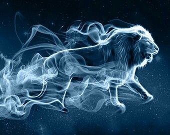

Odabrao/la si Vatru!
Tvoj patronus je Lav
Lav je bio patronus mnogih velikih carobnjaka.Lava odlikuje odvaznost, spretnost i hrabrost.
Oni su veoma mudre pametne i spretne zivotinje.
Lav kao patronus znaci da si ti veoma hrabra osoba koja zna sta hoce.
I u tebi se krije veliki carobnjak! A sada samo napred i iskoristi svoj patronus.
Expectoooooooooooo patroooooooooonuuum!